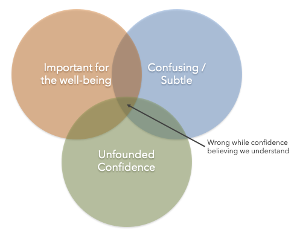

Bayes' Theorem and the Deathly Hallows
This article is an expanded version of the math part of an article I cowrote with marine biologist Dr. Andrew Rhyne about how many well-meaning public health professionals have misinterpreted the math behind test efficiency, Bayes’ Theorem. This misinterpretation has lead to dangerous public policy positions. Anyone with a math allergy is invited to read that article instead.
I and Dr. Andrew Rhyne, marine biologist and my longtime collaborator in fighting wildlife crime, have spent a lot of time in the last several months working on how best to fight the COVID-19 pandemic, especially in college communities like our own Roger Williams University.
How understanding Bayes’ Theorem is crucial in informing health policies

Imagine a Venn diagram of intellectual ideas with three overlapping circles as depicted above. The first orange circle represents those ideas that are important for the well-being, smooth functioning, and progression of human society. In this circle, we find the germ theory of disease, the moral imperative of the Golden Rule, and basic arithmetic. The second blue circle represents ideas that are confusing or subtle. The Hegelian dialectic lives here alongside every book with the word semiotics in the title, and the Paradox of Indoor Ornithology, which claims that the sight of a green apple is evidence supporting the notion that all ravens are black ravens.1 If you just said, “What?,” I want to point out that that’s the point: these are difficult, confusing ideas. Finally, we have the circle of ideas that are just too easy to believe one understands when one actually does not. These are ideas that, whether or not they appear simple, have the peculiar ability to lure us into a completely unfounded confidence in our understanding of them. Clearly this circle contains virtually all public political discourse, for example, but it also contains some surprises: Robert Frost’s “Stopping by Woods on a Snowy Evening,” the dangers of quicksand, leprosy, and the inventor of peanut butter, to name a few. You think you know, but google it.
Frightening is the overlapping intersection of these three circles. Here are challenging ideas that are important for human society that we often get wrong while confidently believing we understand. Bayes’ Theorem is one of these ideas.
The Basics of Bayes’ Theorem
It’s not that Bayes’ Theorem is widely known—it does have “theorem” in its name, after all. But when it is known, it is often misinterpreted or misapplied. Despite mathematical notation that makes it look like an alien language, Bayes’ Theorem is actually quite short and simple:
.
This formula expresses a relationship between four probabilities. It’s best explained with a concrete example, and the subject of this article, testing for disease, is a classic. If we test somebody for, say, COVID-19, then there are four possible scenarios:
| Person actually has COVID-19 | Person does not have COVID-19 | |
|---|---|---|
| Test result is positive | true positive | false positive |
| Test result is negative | false negative | true negative |
A word of warning: It is very easy to mix up these terms. Just keep referring back to this table whenever you need to.
The first thing to understand is this: The probability of having COVID-19 given that you already know the test came out positive, which we will denote by $P(cov\mid pos)$, is a different probability from the probability of the test coming out positive given you have COVID-19, which we likewise denote by $P(pos\mid cov)$. The difference, of course, is what information you already know. The question, “If an animal is in the chicken coup, what’s the probability that it is a chicken?,” $P(chicken \mid coup)$ in our notation, is a different question from, “If the animal is a chicken, what is the probability that it is in the coup?,” $P(coup\mid chicken)$. It could be that my chickens are indoor chickens that never leave the coup, so $P(coup \mid chicken)=100\%$, but I also keep an equal number of turkeys in the coup, so $P(chicken \mid coup) = 50\%$.2
You are now fluent in the alien language that makes up the mathematical notation of Bayes’ Theorem. The power of Bayes’ Theorem is that we can convert from $P(chicken \mid coup)$ into $P(coup\mid chicken)$ using the unconditional probabilities of an animal being a chicken regardless of location, $P(chicken)$, and the probability of an animal being in the coup regardless of species, $P(coup)$. With COVID-19 testing, we can compute the probability that you are infected with COVID-19 given that your test result is positive using knowledge of the probability that you will test positive given that you really are infected:
.
This mathematical trick allows us to determine the relationships between the four scenarios in the table above.
The Importance of Bayes’ Theorem
It should be obvious that understanding the performance of tests for disease and of drugs with which to treat them is paramount for the prevention and treatment of disease from the individual level to the level of worldwide populations.
As we form policies about testing people for COVID-19, we need to answer these questions: How should the knowledge we get out of Bayes’ Theorem influence our testing strategy for monitoring the population for COVID-19? What policies would be the best use of our limited resources?
The Paradox of Bayes’ Theorem
What could be so subtle about a simple formula with just four quantities and two arithmetic operations? In short, interpretation. Here is a classic homework problem described by mathematician Chris Wiggins3:
A patient goes to see a doctor. The doctor performs a test with 99 percent reliability—that is, 99 percent of people who are sick test positive and 99 percent of the healthy people test negative. The doctor knows that only one percent of the people in the country are sick. Now the question is: if the patient tests positive, what are the chances the patient is sick?
The intuitive answer is 99 percent, but the correct answer is 50 percent….
Even with “good” tests, testing positive does not necessarily mean you “probably” have the disease! For this example, the surprising result is because the disease is very rare in the population. When it comes to testing for diseases, the punchline is: There is a higher proportion of false positives relative to true positives when the prevalence of a disease is very low.
The Deadly Misunderstanding of Bayes’ Theorem
False Positives
That last sentence is worth repeating:
There is a higher proportion of false positives relative to true positives when the prevalence of a disease is very low.
False positives come with “costs”. If people who test positive but are in reality not infected have to self-quarantine, they could experience a major disruption to their lives, including to their financial and mental health. Citing Bayes’ Theorem, many experts conclude that because COVID-19 is such a low-incidence disease, the cost of whole population testing outweighs the benefits. A logician might structure this argument as follows:
- The prevalence of COVID-19 is low, perhaps less than 1% in the United States.
- Since the prevalence of the disease is very low, the proportion of false positives to true positives will be high for any given test.
- The social and economic cost of false positives is high.
- Therefore, the cost of large scale testing swamps any possible benefit.
This is a dangerously incorrect mathematical interpretation.
Consider a 99% reliable test as in the classic example above. Suppose we test a town with a population of 10,000 people. If 0.1% of people in town (that’s 1 in 1000) are infected, then 10 people have COVID-19, and our test detects all 10 of them 99 times out of 100 (on average). Meanwhile, the test incorrectly labels 1% of the 9990 remaining people (again, on average), which is about 100 people, as positive.
Will we get significantly fewer false positives if the infection rate is higher, as some experts suggest? Let’s instead suppose that 1% of the people are actually infected—that’s 100 infected people, 10 times more than we thought. Then the test correctly labels 99 of the 100 infected people on average. Of the remaining 9900 covid-free people, 99 people are incorrectly labeled as positive by the test. There are fewer false positives, yes, but fewer only by one person.
The mistake is to think that the quality of testing depends on the prevalence of disease. It doesn’t. The test will be exactly the same regardless of prevalence, because its false positive rate is not affected by prevalence. The test could not possibly be influenced by the state of the population outside of the testing lab.
On the other hand, our testing policies must be informed by the state of the population. A significantly lower prevalence does not result in significantly more false positives as some experts have claimed, and so we shouldn’t care at all that 50% versus 9% of the people who tested positive are actually infected—the “cost” we pay as a population for those false positives is virtually the same as it would be with a much higher rate of infection. Yet the benefit is exponential: We catch infections much sooner, before they have a chance to take root.
We want nobody in the population to be infected, and if nobody is infected, then the only way for a test to turn out positive is if the test is wrong—a false positive. In other words, we want every positive test result to be a false positive—and to keep it that way. Choosing not to test the population at large because the prevalence of disease is low is the equivalent of deciding that you don’t need to take your medication anymore because it is working. The reason you are healthy is because it is working! Many public health specialists are advising schools and employers based on exactly this backwards reasoning.
False Negatives
Some have argued that we should be concerned instead about false negatives. Suppose, for example, that a test is only capable of identifying an infected sample 50% of the time. That means roughly that every time the population is tested, half of the infected individuals are identified and removed (via quarantine). If removing half of all infected individuals from a college campus sounds like an obviously good idea to you, that’s is because it is. Simple arithmetic shows whole population testing — especially repeated whole population testing — reduces the number of infected individuals in the population. (Sophisticated models do as well: See Larremore et al.; Dawoud, RSAP.)
And yet some health experts like Dr. Tom Jeanne, the deputy epidemiologist for Oregon, justifies his guidance to not employ whole population testing based on the rate of false negatives: “A negative result does not meaningfully increase confidence that a person is not infected,” Jeanne said. “And just as importantly, a negative result does not mean that a person has any period of protection when they are not or cannot be infected” (Murakami, InsideHigherEd). But our inability to certify an individual as disease free with a high degree of confidence is immaterial. Our goal, rather, is to reduce the rate of infection to zero or near zero and then keep it that way.
The discussion so far is based on the premise that tests for COVID-19 have a nonzero false positive rate. Current tests for COVID-19 use a diagnostic technique called qPCR to detect the presence of three distinct genes, a control and two carried by the coronavirus that causes COVID-19.4 In essence, the test makes copies of these genes, if they are present, “amplifies” their presence in the sample, and quantifies the amount of the original gene by measuring this amplification. For this discussion, our only interest is in the presence or absence of the gene. The probability of detecting these genes in people that are notor were not infected by nCOV-SARS-2 is virtually zero. Thus, if the gene is detectable after amplification, it must have been present in the original sample, and the person that sample came from must therefore be infected by the virus. If a gene were somehow constructed by cosmic coincidence, it is possible that the gene would be amplified and detected by the test. But remember, two distinct genes are detected, so a false positive requires not one but two separate cosmic coincidences to occur simultaneously. It is exceedingly rare to have a false positive with the PCR methods developed for this virus. None of the FDA approved tests have false positives. (FDA)
On the other hand, false negatives are possible. For qPCR methods, a false negative occurs when the viral load, that is, the number of viruses in the sample, starts out too low to be amplified sufficiently to be detected (Prinzi, ASM). In the course of a COVID-19 infection, there are two time periods during which the viral load is very low: when the infection has only barely begun, and when the virus has been almost completely wiped out by the body’s immune system. Early in the infection (Kucirka et al, AIM) is the period with the highest likelihood that an infected person will transmit the virus to others. This is also the easiest point in the progression of infection to detect the virus. Thus, false negative rates are tied to infection potential: the higher the potential for spreading the infection, the lower the false negative rate, and vice versa. This situation is exactly why testing populations repeatedly are worthy causes.
What does Dr. Jeanne conclude from this? That because false negative rates are high, the results likely will be wrong, and thus it doesn’t make sense to use tests on asymptomatic people (Murakami, InsideHigherEd). This is not what a high false negative rate means. A test with a high false negative rate might also have an extremely high true positive rate, which is precisely the situation with qPCR tests for COVID-19. Indeed, if almost nobody has a disease, then a test that always gives a negative result no matter what would be correct the vast majority of the time. It simply is not the appropriate measure by which to judge a test in this context.
The Deadly Misapplication of Bayes’ Theorem
Moreover, when we say the false negative rate is high, we implicitly mean that it is high relative to some other thing and for a specific purpose. If a person is tested every 3 days, and the false negative rate is 70%, then the probability that the person will test positive before or on day nine is 76%. Now, a false negative rate of 70% is very high relative to other tests for other diseases, and for the purpose of testing a person a single time to certify that person as free of disease, the test would be all but useless. But in the context of whole population testing, even a false negative rate as “bad” as 70% is actually pretty good.
This misinterpretation of the significance of Bayes’ Theorem and of false positives and false negatives in particular is not isolated to just one or two public health specialists. I have collected in the table below just a small sampling of different public health authorities that are making this same mistake.
Public health professionals arguing against mass scale testing.
| Person / Group | Reason for not deploying population scale testing. |
|---|---|
| Dr. Tom Jeanne, the deputy epidemiologist for Oregon | “’A negative result does not meaningfully increase confidence that a person is not infected,’ Jeanne said. ’And just as importantly, a negative result does not mean that a person has any period of protection when they are not or cannot be infected.’"And because the state has only so many tests, he said it doesn’t make sense to use them on asymptomatic people when the results likely will be wrong.” |
| Michael T. Osterholm, PhD, MPH of University of Minnesota, CIDRAP | “Universal testing in hospital settings (not recommended). Universal testing of all patients at the time of admission is of limited value in areas with low prevalence of infection (particularly in the absence of a known exposure) because of the high likelihood of false-positive tests. The lower predictive value of a positive test in this setting makes interpretation of the test result difficult.” “Workplace testing (not recommended except in certain circumstances). In most situations, workplace testing will not be of value… Owing to uncertainties in test performance in asymptomatic individuals because of low prevalence of infection in the population, the meaning of a positive or negative test result in this situation is not clear.” “Widespread community-based testing (not recommended). Again, in low-prevalence settings, widespread community testing does not offer a public health benefit because of the varying positive and negative predictive value of the test results.” |
| American College Health Association | “The overall prevalence of COVID in a healthy young adult population is likely to be very low, and probably less than 1%. At this prevalence level, the positive and negative predictive values of most screening tests would be unreliable unless the test used has both extremely high sensitivity and specificity. Many tests available today do not meet that standard.” “Screening large numbers (thousands) of students will likely produce no substantial public health benefit, and at very high cost.” Response to our email expressing concern about their approach: “Thank you for reaching out and providing your thoughts. Our brief aligns with current CDC testing recommendations.” |
| Rhode Island School of Design | “Based on our research, as well as consultation with Keeling and Associates, we recommend that RISD focus on the use of diagnostic testing, initiated by symptomatology and/or contact tracing, supported by strict use of quarantine and isolation. Mass testing of asymptomatic people has been proposed by several schools, however we have found that such testing does not have high scientific value, because it provides only a quick snapshot of a current condition, which could change within hours. We also do not recommend surveillance testing, which samples the population to track the presence of the virus, because the rates of false negative/positive results for low-prevalence groups may approach the population disease incidence (~1%).” |
The Mathematician’s Stone
Some widespread claims about population testing are likely to be true. For example, several scientists and public health specialists have pointed out that random population sampling is unlikely to make a significant impact on public health. This claim is backed by strong scientific evidence. There is also near universal agreement that serology (antibody) tests, or any other tests currently available for past or present nCOV-SARS-2 infection, should not be used to clear someone as healthy and therefore safe to join a group. Since these conversations necessarily use a lot of technical language—serology tests, random sampling—it is all too easy for nonspecialists to hear one thing and understand another. It matters a great deal how scientists talk about these technical topics. Scientists need to anticipate sources of confusion, like the difference between sensitivity and specificity, or false positives and false negatives, or random sampling and whole population testing.
It is possible that I am grossly misinformed regarding the characteristics of qPCR testing for COVID-19, or that I am wrong in thinking most people have significant misconceptions about leprosy. But with mathematics, nobody needs to trust what I say is true on my authority as a mathematician. Anyone with sufficient mathematical training can see for themselves. To make it easier for nonscientists to do this kind of verification, I have built an online tool that anyone can use to compute outcomes of interest based on estimates of a test’s performance characteristics that can be adjusted with a slider. The source code is also available on GitHub so that anyone who finds a mistake in the code can report the error or even submit a fix.
I want to be very clear about what I am criticizing in the work of the scientists I have pointed out by name or description. In the case of Oregon’s deputy epidemiology Dr. Tom Jeanne, for instance, it may be the case that Dr. Jeane is right that wide-scale testing is not the right thing for Oregon at this time. There are many factors to consider in making that determination, including test kit availability, test processing capacity, and funding, and it is likely that Dr. Jeane has carefully weighed all of these factors. However, his claim that a high false negative rate means that test results will likely be incorrect or that they make wide-scale testing of little use is wrong as a matter of arithmetic.
But What If…?
A variety of justifications have been proposed for not implementing whole-population testing. Suppose that the only tests we have access to are not as good as the qPCR methods have been described above.
| Problem | Remedy |
|---|---|
| The sensitivity (true positive rate) of the test is low, resulting in many false negatives | Test often and reduce the dilution of the samples at collection. |
| The specificity (true negative rate) of the test is low, resulting in many false positives. | Re-test samples that test positive, preferably with a more accurate test. If the population is tested frequently at regular intervals, say, every three days, a person who tests positive might only be asked to quarantine until the next test returns negative. Since the entire population is regularly tested, contact tracing may not be necessary. In some limited circumstances, it might be reasonable only to ask someone who tests positive to follow more aggressive prevention and social distancing practices instead of absolute quarantine until they can be retested. |
| The prevalence (infection rate) of the disease is extremely low or zero. | This is the goal and is not a problem. Keep testing to keep it this way. |
| We do not have the test processing capacity or number of tests or financial resources necessary to test everybody in the population. | Several reports have demonstrated sample pooling as effective in the context of population monitoring for COVID-19. Sample pooling can increase testing capacity by an order of magnitude and reduce costs. |
| Quarantining and contact tracing are too disruptive or costly or distressing to implement for someone who is a false positive (healthy but tests positive). | If you are regularly testing the entire population, there is less need to do contact tracing, because you are already testing the contacts regularly. Reduce false positives by retesting samples that test positive, preferably with a more accurate test. People who test positive can also be tested again after a few days, increasing confidence in the test result.People that are isolated because of contacts with positive people can be tested negative and return to their lives rather than sitting in isolation for two weeks. |
| Even with mitigation strategies, the test processing capacity is not sufficient to test everyone. | Test as many people as you have capacity for on a schedule that will eventually test everyone given enough time. Prioritize the processing of tests of clinical importance, skipping them to the front of the line. |
Among the greatest concerns of public health officials regarding whole population testing are the availability and cost of tests and the available capacity to process the tests. At the same time, the benefit of whole population testing is enormous. Resource usage may be a limiting factor in some regions, but sample pooling can potentially magnify the capacity of those resources by an order of magnitude. Performing and processing 2,500 tests a day might be out of reach for a single institution, but 300 or fewer tests required by sample pooling might be feasible, allowing the institution to test everyone on a regular schedule. Over time, test processing capacity is likely to increase (MA High Technology Council, The War on COVID-19: Reducing Rt Deep Dives).
When not to use whole population testing, and when to stop testing
Despite the mathematical case for whole population testing, there are still valid reasons not to employ wide scale testing of asymptomatic people. There is still an acute shortage of test kits in many regions. Similarly, test processing capacity needs to be ramped up to support large-scale testing. Some institutions might not have sufficient funding for whole population testing in communities that feel the need to accept the risk of reopening without ideal precautions. Some communities may have so much contact with their ambient population that testing the entire community would be futile.
For communities that are good candidates for whole population testing, the argument we are making may sound too aggressive, as if the argument does not allow for the end of testing. The purpose of testing the population is to reduce the prevalence of the disease to zero despite the nonzero prevalence of the disease in the ambient region. Testing can stop
- when the prevalence of the disease in the region off-campus drops low enough to no longer be a threat to the health and lives of the campus community;
- when a vaccine is widely available to the campus community;
- when the region reaches herd immunity.
What should Colleges and Communities do? There is no one-size-fits-all solution. What does seem clear is that unless campuses are willing to take dramatic measures that will be hard for colleges and universities to swallow, the outcome is likely to be grim. We have no choice but to pay a steep price while we wait for the endgame of this pandemic. We can choose to pay the financial costs of investing in the infrastructure and resources for wide-scale testing, or we can save our money and pay instead with the human lives of those that will succumb to the disease we choose not to test for.
-
This paradox is more popularly—and more boringly—called the Raven Paradox. Unfortunately, we are no closer to understanding why a raven is like a writing desk. ↩
-
This does not constitute animal husbandry advice. ↩
-
From Chris Wiggins, “What is Bayes’s theorem, and how can it be used to assign probabilities to questions such as the existence of God? What scientific value does it have?” Scientific American, Dec. 2005. Online: https://www.scientificamerican.com/article/what-is-bayess-theorem-an/ ↩
-
The technique also detects an additional “control” gene inserted artificially as a baseline comparison for quantitative measurements. For the purposes of the present discussion, we care only about detecting the presence of the virus, not about quantifying viral load. ↩